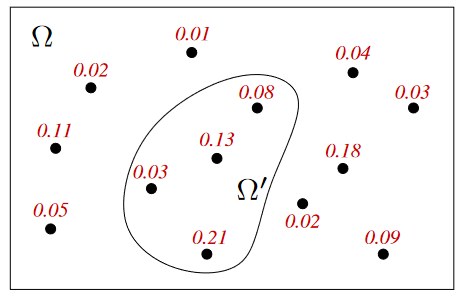
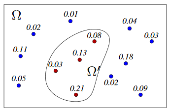
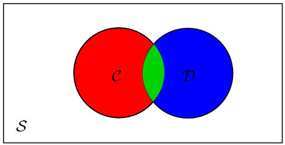
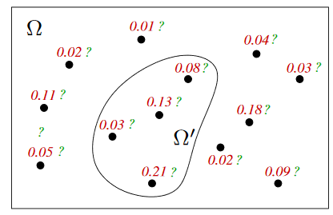
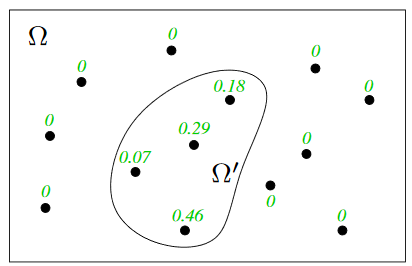
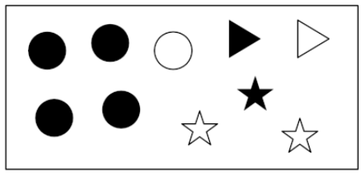
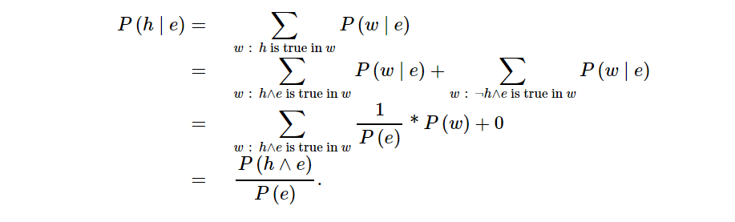
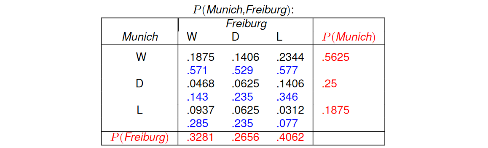

Reasoning Under Uncertainty¶
Epistemological
- Pertaining to an agent’s beliefs of the world
Ontological
- How the world is.
Semantics of Probability¶
Probability theory is built on the foundation of worlds and variables.
The variables in probability theory are referred to as random variables.
Variables are written starting with an uppercase letter.
- Each variable has a domain. The set of values that it can take.
- A discrete variable has a domain that is a finite or countable set.
A primitive proposition is an assignment of a value to a variable or an inequality between variables, or variables and values.
Examples:
- A=true
- X<7
- Y>Z
Propositions are built from primitive propositions using logical connectives.
Probability Measures¶
A probability measure is a function P from worlds into non-negative real numbers
to subsets \Omega'\subseteq \Omega such that
Axiom 1: P(\Omega)=1
Axiom 2: if \Omega_1 \cap \Omega_2=\empty, then P(\Omega_1\cup\Omega_2)=P(\Omega_1)+P(\Omega_2)
If all variables have a finite domain, then
- \Omega is finite, and
- a probability distribution is defined by assigning a probability value P(\omega) to each individual possible world \omega\in\Omega
For any \Omega' \subseteq \Omega then
Example

Probability of Propositions¶
The definition of P is extended to cover propositions.
The probability of proposition \alpha written P(\alpha), is the sum of the probabilities of possible worlds in which \alpha is true.
Example

Probability Distribution¶
If X is a random variable, a probability distribution P(X) over X is a function from the domain of X into the real numbers, such that given a value
x\in domain(X), P(x) is the probability of the proposition X=x.
A probability distribution over a set of variables is a function from the values of those variables into a probability. Example:
P(X,Y) is a probability distribution over X and Y such that
P(X=x,Y=y), where x\in domain(X) and y\in domain(Y)
has the value P(X=x \and Y=y) where X=x \and Y=y is a proposition and P is the function on propositions defined above.
If X_1 \dots X_n are all of the random variables, then an assignment to all of the random variables corresponds to a world,
and the probability of the proposition defining a world is equal to the probability of the world.
The distribution over all worlds, P(X_1, \dots,X_n) is called the joint probability distribution.
Axioms for Probability¶
Axiom
If A and B are disjoint, then P(A\cup B)=P(A)+P(B)
Example
Consider a deck with 52 cards. If A=\{2,3,4,5\} and B=\{7,8\} then
More Generally
If C and D are not disjoint, then P(C\cup D)=P(C)+P(D)-P(C\cap D)
Example
If C=\{2,3,4,5\} and D=\{\spadesuit\} then

From The Book
Suppose P is a function from propositions into real numbers that satisfies the following three axioms of probability:
Axiom 1
0\leq P(\alpha) for any proposition \alpha. That is, the belief in any proposition cannot be negative.
Axiom 2
P(\tau)=1 if \tau is a tautology. That is, if \tau is true in all possible worlds, its probability is 1.
Axiom 3
P(\alpha \or \beta)=P(\alpha)+P(\beta) if \alpha and \beta are contradictory propositions;
That is, if \neg(\alpha \or \beta) is a tautology. In other words, if two propositions cannot both be true (mutually exclusive), the probability of their disjunction, is the sum of their probabilities.
If a measure of belief follows these intuitive axioms, it is covered by probability theory.
Proposition 8.1:
If there are a finite number of finite discrete random variables, Axioms 1, 2 and 3 are sound and complete with respect to the semantics
Proposition 8.2:
The following holds for all propositions \alpha and \beta:
- Negation of a proposition:
-
If \alpha \leftrightarrow \beta, then P(\alpha)=P(\beta). That is, logically equivalent propositions have the same probability.
-
Reasoning by cases:
- If V is a random variable with domain D, then, for all propositions \alpha
- Disjunction for non-exclusive propositions:
Updating Probability¶
Given new information (evidence), degrees of belief change
Evidence can be represented as the set of possible world \Omega' not ruled out by the observation

When we observe \Omega'
- Worlds that are not consistent with evidence have probability 0
- The probabilities of worlds consistent with evidence are proportional to their probability before observation, and must sum to 1

Conditional Probability¶
The measure of belief in proposition p given proposition e is called the conditional probability of p given e. Written:
A proposition e representing the conjunction of all of the agent’s observations of the world is called evidence.
Given evidence e, the conditional probability P(p\mid e) is the agents posterior probability of p. The probability P(p) is the prior probability of p and is the same as P(p\mid true).
The conditional probability of p given e is:
Example

Bayes Rule¶
For propositions p,e:
Example
A doctor observes symptoms and wishes to find the probability of a disease:
Chain Rule¶
For propositions p_1,...,p_n:
Semantics of Conditional Probability¶
Evidence e e where e is a proposition, will rule out all possible worlds that are incompatible with e.
Evidence e induces a new probability P(w\mid e) of world w given e. Any world where e is false has conditional probability 0, and remaining worlds are normalized so their probabilities sum to 1:
where c is a constant (that depends on e) that ensures the posterior probability of all worlds sums to 1.
For P(w \mid e) to be a probability measure over worlds for each e:

Therefore, c=1/P(e). Thus, the conditional probability is only defined if P(e)>0
The conditional probability of proposition h given evidence e is the sum of the conditional probabilities of the possible worlds in which h is true:

A conditional probability distribution, written P(X \mid Y), where X and Y are variables or sets of variables, is a function of the variables:
Given a value x\in domain(X) for X and a value y \in domain(Y) for Y, it gives the value P(X=x \mid Y= y).
Proposition 8.3 (Chain rule):
For any propositions a_1,\dots,a_n:
where the right-hand side is assumed to be zero if any of the products are zero (even if some of them are undefined.
Note
Complete notes. From Bayes' Rule
Random Variables and Distributions¶
Random Variables
Variables defining possible worlds on which probabilities are defined.
Distributions
For a random variable A, and a\in D_A we have the probability
The probability distribution of A is the function on D_A that maps a to P(A=a) The distribution of A is denoted
Joint Distributions
Extension to several random variables
is the joint distribution of A_1,\dots,A_k The joint distribution tuples (a_1,\dots,a_k) with a_i\in D_{A_i} to the probability $$ P(A_1=a_1,\dots,A_k=a_k) $$
Chain Rule for Distributions¶
Note:
- Each P(p_i\mid p_1\and\dots\and p_{i-1}) was a number.
- Each P(A_i\mid A_1,\dots,A_{i-1}) is a function on tuples (a_1,\dots,a_i)
Bayes rules for Variables¶
Independence¶
The variables A_i,\dots,A_k and B_1,\dots,B_m are independent if:
Which is equivalent to
and
Example¶
Results for Bayern Munich and SC Freiburg in seasons 2001/02and 2003/04. (Not counting thematches Munich vs. Freiburg):
Summary:
Joint distribution

Conditional Distribution \color{blue}P(Munich\mid Freiburg)

We have (almost): P(Munich \mid Freiburg)=P(Munich)
The variables Munich and Freiburg are independant
Independance can greatly simplify the specification of a joint distribution:

The probability for each possible world is then defined e.g.
Conditionally Independent Variables¶
The variables A_1,\dots,A_n are conditionally independent of the variables B_1,\dots,B_m given C_1,\dots,C_k if